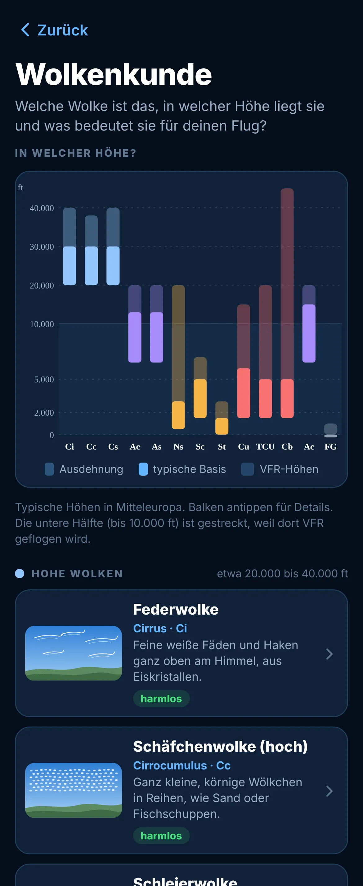

Flulino
Alles für deinen Flug. In einer App.
Vom ersten Blick aufs Wetter bis zum Eintrag ins Flugbuch. Übersichtlich, ohne Konto und ohne Werbung.
Wetter, Beladung, Funk und Flugbuch. Alles für deinen VFR-Flug in einer App. Auf Deutsch und für immer kostenlos.
Vom ersten Blick aufs Wetter bis zum Eintrag ins Flugbuch. Übersichtlich, ohne Konto und ohne Werbung.
Das Höhenprofil zeigt Wolken, Wind in jeder Höhe, Nullgradgrenze und Gewitterrisiko auf einen Blick. METAR und TAF gibt es in Klartext.
Dein Flugzeug mit den Werten aus Flughandbuch und Wägebericht. Start und Landung liegen im Diagramm, und Flulino sagt dir in Klartext, ob alles passt.
Alle Wolkengattungen mit selbst gezeichneten Bildern, typischen Höhen, Risiken für VFR und einem Merksatz, der hängen bleibt.
Notfrequenz, Squawks, Lichtsignale, Halbkreisflughöhen und GAFOR. Die Funksprüche sind schon mit deinem Kennzeichen ausgefüllt.
Windseite und Rechenscheibe wie aus Metall, nur auf dem iPhone. Drehen, schieben und exakt ablesen, mit Lösungsweg Schritt für Schritt.
Flüge eintragen, Flugzeit und Landungen werden automatisch summiert. Mit Übertrag aus dem Papier-Flugbuch und Export als PDF.
Kostenlos. Für immer. Keine Werbung, kein Abo, kein Konto. Deine Daten bleiben auf deinem iPhone. Gebaut von einem Piloten, für alle, die gern fliegen.

Ja. Kein Abo, keine Werbung, alle Funktionen für alle. Wer möchte, kann das Projekt freiwillig mit einer kleinen Spende im App Store unterstützen. Dadurch wird nichts freigeschaltet.
Nein. Beim ersten Start gibst du nur deinen Namen ein. Alle Daten bleiben auf deinem iPhone.
In Flulino unter Mehr → Daten exportieren eine Sicherung erstellen, z. B. in iCloud Drive oder per AirDrop. Auf dem neuen iPhone beim ersten Start „Sicherung einspielen“ wählen. Deine Daten sind außerdem Teil deines normalen iPhone-Backups.
Nein, bewusst nicht. Jedes Flugzeug wird einzeln gewogen. Leermasse, Hebelarme und Grenzen trägst du selbst aus Flughandbuch und Wägebericht ein. Nur so stimmt die Rechnung für genau dein Flugzeug.
Du erstellst dein NOTAM-Briefing wie gewohnt im AIS-Portal der DFS, direkt in der App und mit deinem eigenen DFS-Zugang. Mit einem Tipp übernimmt Flulino das Briefing und bereitet es auf Deutsch auf. Maßgeblich bleibt immer der Originaltext.
Aus frei verfügbaren Quellen: Deutscher Wetterdienst, Open-Meteo, NOAA Aviation Weather Center, Bundesamt für Kartographie und Geodäsie, Apple Karten, open flightmaps (Lufträume) und OurAirports. Die Anflugkarten öffnet Flulino direkt im AIP VFR der DFS.
Danke! Schick uns eine Nachricht über Mehr → Kontakt in der App oder eine Mail an flulino@icloud.com, am besten mit Bildschirmfoto und der Versionsnummer (Mehr → Über Flulino).
Alle in Flulino angezeigten Daten dienen der allgemeinen Information und können unvollständig, veraltet oder falsch sein. Die Nutzung von Flulino befreit nicht von der Pflicht zur ordnungsgemäßen Flugvorbereitung mit offiziell zugelassenen Mitteln. Die Verantwortung liegt immer beim verantwortlichen Luftfahrzeugführer.
Die App wird ohne Gewährleistung bereitgestellt. Eine Haftung für Schäden, die durch die Nutzung entstehen, ist, soweit gesetzlich zulässig, ausgeschlossen.